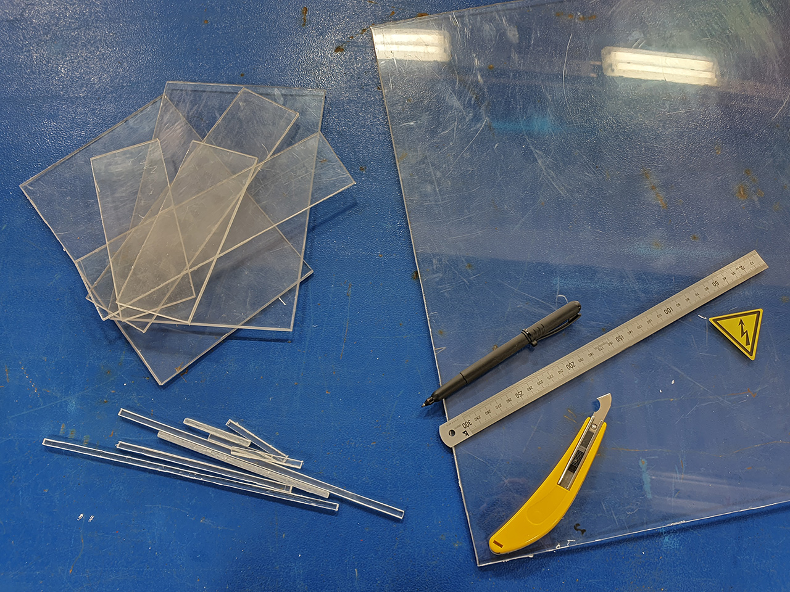

Все компоненты подготовлены для дальнейшей сборки, остается их подключить между собой. Для простого понимания этого процесса я составил наглядную монтажную схему всех необходимых подключений (ссылка).
Все компоненты мы конечно же можем разместить непосредственно на корпусе самого ТВ (большинство пользователей так именно и делают), но гораздо практичнее как в плане уборки так и в плане безопасности разместить их в каком нибудь едином корпусе. Корпус это индивидуальная вещь, его вы можете как приобрести готовым в магазине (если его размеры вым подойдут так и изготовить самостоятельно своими руками.
На момент написания данного руководства я решил его изготовить самомтоятельно используя в качестве основы Plexiglas (органическое стекло). Материал легко поддается обработке в отличие от железа. На певом этапе примерно производим расстановку наших комплектующих для понимания необходимых габаритов для изготовления заготовки корпуса. После замеров размечаем необходимые размеры на листе материала и вырезаем элементы будущего корпуса.

{kind=link}